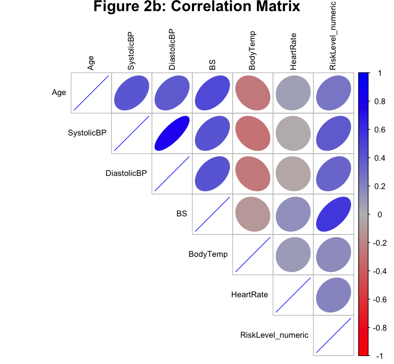
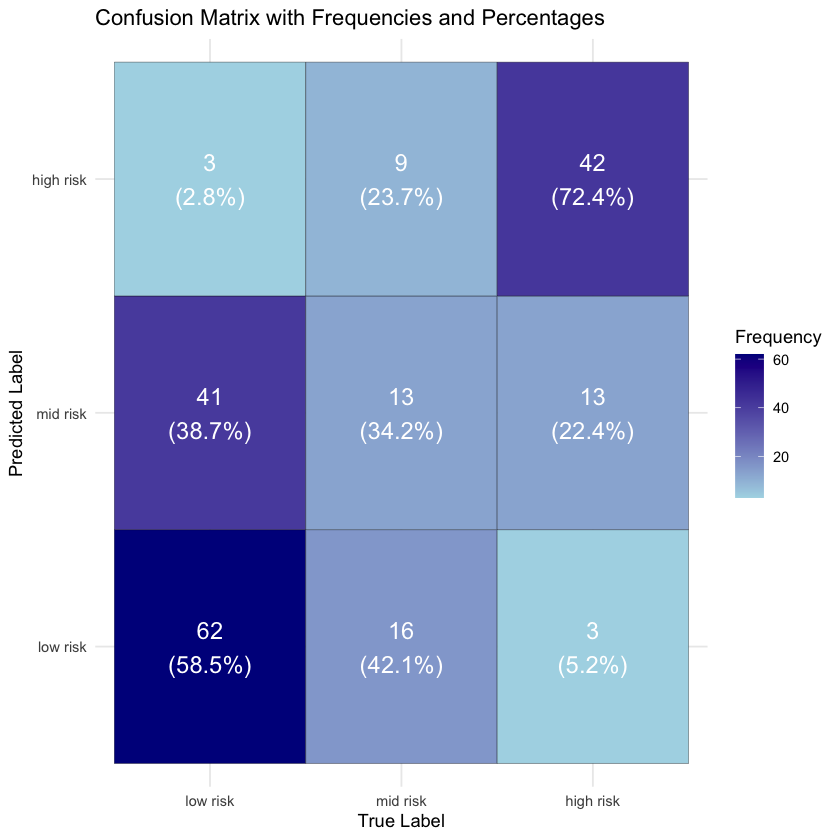

library(tidyverse)
library(corrplot)
library(nnet)
# library(caret)
library(gridExtra)
library(grid)
Attaching package: ‘gridExtra’
The following object is masked from ‘package:dplyr’:
combine
This project aims to use machine learning to predict maternal health risk based on key physiological factors. Maternal health are a major concern in healthcare. Hence, early risk assessment is crucial for the welfare of both the mother and child. By leveraging structured data from the Maternal Health Risk Dataset, we trained and evaluated machine learning models to classify maternal health risk levels into three different classes: low, mid, and high risk categories.
The dataset contains 1,014 records with features such as age, blood pressures, blood sugar levels, body temperature and heart rate. Our goal will be to determine whether machine learning algorithms could accurately predict risk levels based on these physiological markers and aid medical experts.
We will carry out exploratory data analysis, feature engineering and preprocessing to the dataset and then apply multiple classification models including logistic regression, decision trees,___________, We might also carry out hyperparameter optimization and finally evaluate their accuracy and other classification metrics such as precision, recall, F1-score, and AUC-ROC.
Maternal health can be defined as “the health condition of women during preganancy, childbirth, and the postnatal period (WHO, 2025). This is a critical area of healthcare, as complications during preganancy and childbirth can lead to severe consequences for both mothers and newborns. According to the World Health Organization (2024), around 800 women died each day in 2020 due to preventable causes related to maternal health, further emphasizing the need for risk assessment measures.
Historically, risk assessment have been carried out by medical professionals that relied heavily on clinical expertise and constant monitoring. However, traditional approaches to monitoring basic physiological indicators often lacked efficiency in identifying potential complications (Mu et al., 2023). Since the boom of machine learning (ML), many members of the academe have explored the use of ML in maternal health risk prediction, offering data-driven approaches to enhance early detection and intervention to offload the burden on overworked medical professionals (Mu et al., 2023; Ukrit et al., 2024; Bajaj et al., 2023).
To contribute to this discourse, this research aims to conduct a comparative study on the performance of three ML techniques in predicting maternal health risk, assessing each model’s reliability in identifying risk levels.
The analysis will utilize the Maternal Health Risk dataset sourced from the UC Irvine Machine Learning Repository. Consisting of 1014 observations, this dataset includes the following 7 features:
Age: Age of the patient (in years).SystolicBP: Systolic Blood Pressure (mmHg).DiastolicBP: Diastolic Blood Pressure (mmHg).BS (Blood Sugar Level): Blood sugar concentration (mmol/L).BodyTemp: Body temperature (°F).HeartRate: Heart rate (beats per minute).RiskLevel: The target variable, categorized into low risk, mid risk, and high risk.note: all tables and figure should have a figure/table number and a legend
For this analysis, the data will first be loaded into the notebook then cleaned to handle any possible missing values and ensure its usability for the various models. Following the data cleaning stabe will be an exploratory data analysis (EDA) to gain a comprehensive view of the data. This step will include visualizing the summary statistics, distributions, and correlations between variables to determine any patterns in the data prior to the model development.
This study will implement three ML classification models: 1. Logistic Regression 2. Random Forest 3. K-Nearest Neighbors (KNN)
Each model will be evaluated using various metrics such as accuracy, precision, recall, F1-score, and AUC-ROC to compare their relative performance in maternal health risk prediction.
library(tidyverse)
library(corrplot)
library(nnet)
# library(caret)
library(gridExtra)
library(grid)
Attaching package: ‘gridExtra’
The following object is masked from ‘package:dplyr’:
combine
The dataset was downloaded from the UC Irvine Machine Learning Repository and uploaded to the project’s repository from which it is read for the analysis.
data <- read_csv("data/Maternal Health Risk Data Set.csv")
head(data)Rows: 1014 Columns: 7
── Column specification ────────────────────────────────────────────────────────
Delimiter: ","
chr (1): RiskLevel
dbl (6): Age, SystolicBP, DiastolicBP, BS, BodyTemp, HeartRate
ℹ Use `spec()` to retrieve the full column specification for this data.
ℹ Specify the column types or set `show_col_types = FALSE` to quiet this message.| Age | SystolicBP | DiastolicBP | BS | BodyTemp | HeartRate | RiskLevel |
|---|---|---|---|---|---|---|
| <dbl> | <dbl> | <dbl> | <dbl> | <dbl> | <dbl> | <chr> |
| 25 | 130 | 80 | 15.00 | 98 | 86 | high risk |
| 35 | 140 | 90 | 13.00 | 98 | 70 | high risk |
| 29 | 90 | 70 | 8.00 | 100 | 80 | high risk |
| 30 | 140 | 85 | 7.00 | 98 | 70 | high risk |
| 35 | 120 | 60 | 6.10 | 98 | 76 | low risk |
| 23 | 140 | 80 | 7.01 | 98 | 70 | high risk |
From the cell below, we find that there are no NA or null values in our dataset.
tibble(feature = names(data), na = colSums(is.na(data)))| feature | na |
|---|---|
| <chr> | <dbl> |
| Age | 0 |
| SystolicBP | 0 |
| DiastolicBP | 0 |
| BS | 0 |
| BodyTemp | 0 |
| HeartRate | 0 |
| RiskLevel | 0 |
The code below shows that the features Age, SystolicBP, DiastolicBP, BS, BodyTemp, and HeartRate are numeric variables, while RiskLevel is currently a character variable. Moreover, there are three categories under RiskLevel: high risk, mid risk, and low risk
str(data)
data %>% distinct(RiskLevel)spc_tbl_ [1,014 × 7] (S3: spec_tbl_df/tbl_df/tbl/data.frame)
$ Age : num [1:1014] 25 35 29 30 35 23 23 35 32 42 ...
$ SystolicBP : num [1:1014] 130 140 90 140 120 140 130 85 120 130 ...
$ DiastolicBP: num [1:1014] 80 90 70 85 60 80 70 60 90 80 ...
$ BS : num [1:1014] 15 13 8 7 6.1 7.01 7.01 11 6.9 18 ...
$ BodyTemp : num [1:1014] 98 98 100 98 98 98 98 102 98 98 ...
$ HeartRate : num [1:1014] 86 70 80 70 76 70 78 86 70 70 ...
$ RiskLevel : chr [1:1014] "high risk" "high risk" "high risk" "high risk" ...
- attr(*, "spec")=
.. cols(
.. Age = col_double(),
.. SystolicBP = col_double(),
.. DiastolicBP = col_double(),
.. BS = col_double(),
.. BodyTemp = col_double(),
.. HeartRate = col_double(),
.. RiskLevel = col_character()
.. )
- attr(*, "problems")=<externalptr> | RiskLevel |
|---|
| <chr> |
| high risk |
| low risk |
| mid risk |
Given the three distinct categories under the target feature, we will modify RiskLevel to a factor variable to appropriately reflect its categorical nature in further analysis.
data_clean <- data %>%
mutate(RiskLevel = factor(RiskLevel, levels = c("low risk", "mid risk", "high risk")))
head(data_clean)| Age | SystolicBP | DiastolicBP | BS | BodyTemp | HeartRate | RiskLevel |
|---|---|---|---|---|---|---|
| <dbl> | <dbl> | <dbl> | <dbl> | <dbl> | <dbl> | <fct> |
| 25 | 130 | 80 | 15.00 | 98 | 86 | high risk |
| 35 | 140 | 90 | 13.00 | 98 | 70 | high risk |
| 29 | 90 | 70 | 8.00 | 100 | 80 | high risk |
| 30 | 140 | 85 | 7.00 | 98 | 70 | high risk |
| 35 | 120 | 60 | 6.10 | 98 | 76 | low risk |
| 23 | 140 | 80 | 7.01 | 98 | 70 | high risk |
summary(data_clean) Age SystolicBP DiastolicBP BS
Min. :10.00 Min. : 70.0 Min. : 49.00 Min. : 6.000
1st Qu.:19.00 1st Qu.:100.0 1st Qu.: 65.00 1st Qu.: 6.900
Median :26.00 Median :120.0 Median : 80.00 Median : 7.500
Mean :29.87 Mean :113.2 Mean : 76.46 Mean : 8.726
3rd Qu.:39.00 3rd Qu.:120.0 3rd Qu.: 90.00 3rd Qu.: 8.000
Max. :70.00 Max. :160.0 Max. :100.00 Max. :19.000
BodyTemp HeartRate RiskLevel
Min. : 98.00 Min. : 7.0 low risk :406
1st Qu.: 98.00 1st Qu.:70.0 mid risk :336
Median : 98.00 Median :76.0 high risk:272
Mean : 98.67 Mean :74.3
3rd Qu.: 98.00 3rd Qu.:80.0
Max. :103.00 Max. :90.0 Since age is an important factor in maternal health, we visualize the age distribution by risk level. From the visualization, high risk individuals have a higher median age around 35 years old. Additionally, the interquartile range indicates that the high risk group has more variation in age. We observe some outliers in the low and mid risk groups. Based on the visualization, older aged individuals seem more associated with maternal health risks.
For further exploration, we plot for each variable.
ggplot(data_clean, aes(x = RiskLevel, y = Age, fill = RiskLevel)) +
geom_boxplot() +
theme_minimal() +
labs(title = "Age Distribution by Risk Level",
x = "Risk Level",
y = "Age")
# Temporarily change RiskLevel to numerical values (3 = high risk, 2 = mid risk, 1 = low risk)
data_numeric <- data_clean %>%
mutate(RiskLevel_numeric = as.numeric(RiskLevel)) %>%
select(-RiskLevel) # remove the original factor variable
cor_matrix <- cor(data_numeric)
options(repr.plot.width=6.5, repr.plot.height=6)
layout(matrix(1:2, 1, 2))
corrplot(cor_matrix, method = "ellipse", type = "upper", tl.cex = 0.8,
col = colorRampPalette(c("red", "grey", "blue"))(200))
corrplot(cor_matrix, method = "number", type = "upper", number.cex = 1.5, tl.cex = 0.8,
col = colorRampPalette(c("red", "grey", "blue"))(200))
All of the variables have a positive correlation with RiskLevel, indicating that increases in these variables generally correspond to a higher maternal health risk. BS (Blood Sugar level) has the strongest correlation of 0.57, suggesting it is likely to be the most influential factor. We thought age would have a stronger correlation with RiskLevel, however, systolic blood pressure and diastolic blood pressure seems to have a stronger correlation with RiskLevel than age.
These findings may be a possible reason for the outliers observed above. Younger individuals with high blood pressures or sugar levels may be classified into higher risk levels. This indicates the importance of other factors.
#install.packages("nnet")
#install.packages("caret")
library(nnet)
library(caret)
set.seed(123)
# Create an 80% training and 20% testing split
train_index <- createDataPartition(data_clean$RiskLevel, p = 0.8, list = FALSE)
# Subset data into training and testing sets
train_data <- data_clean[train_index, ]
test_data <- data_clean[-train_index, ]
dim(train_data)
dim(test_data)
The downloaded binary packages are in
/var/folders/7n/y9yzs0ls7l1539cwdd99p61w0000gn/T//RtmpXGpeCx/downloaded_packagesalso installing the dependencies ‘future.apply’, ‘progressr’, ‘SQUAREM’, ‘diagram’, ‘lava’, ‘cpp11’, ‘prodlim’, ‘clock’, ‘gower’, ‘hardhat’, ‘ipred’, ‘sparsevctrs’, ‘timeDate’, ‘ModelMetrics’, ‘pROC’, ‘recipes’
The downloaded binary packages are in
/var/folders/7n/y9yzs0ls7l1539cwdd99p61w0000gn/T//RtmpXGpeCx/downloaded_packagesWarning message:
“package ‘caret’ was built under R version 4.3.3”
Loading required package: lattice
Attaching package: ‘caret’
The following object is masked from ‘package:purrr’:
lift
multinom_logistic <- multinom(RiskLevel ~ ., data = train_data)
summary(multinom_logistic)# weights: 24 (14 variable)
initial value 892.073178
iter 10 value 731.740084
iter 20 value 651.225981
iter 30 value 618.926897
iter 40 value 618.918226
iter 50 value 618.750052
final value 618.748469
convergedCall:
multinom(formula = RiskLevel ~ ., data = train_data)
Coefficients:
(Intercept) Age SystolicBP DiastolicBP BS BodyTemp
mid risk -51.45546 -0.003381834 0.06674558 -0.04451933 0.3392350 0.4283579
high risk -102.69736 -0.022647143 0.07188222 0.01910705 0.7532347 0.8265515
HeartRate
mid risk 0.03462081
high risk 0.07073450
Std. Errors:
(Intercept) Age SystolicBP DiastolicBP BS
mid risk 0.0001767925 0.007943439 0.008090217 0.01065454 0.08396116
high risk 0.0001486341 0.012346374 0.011886866 0.01509759 0.08939212
BodyTemp HeartRate
mid risk 0.01314433 0.01283421
high risk 0.01702684 0.01643069
Residual Deviance: 1237.497
AIC: 1265.497 test_predictions <- predict(multinom_logistic, newdata = test_data)
# predict probabilities
test_probabilities <- predict(multinom_logistic, newdata = test_data, type = "probs")
head(test_predictions)
head(test_probabilities)| low risk | mid risk | high risk | |
|---|---|---|---|
| 1 | 0.00227716 | 0.08505357 | 0.91266927 |
| 2 | 0.49794075 | 0.35319560 | 0.14886365 |
| 3 | 0.38120326 | 0.59430812 | 0.02448862 |
| 4 | 0.52108173 | 0.38810710 | 0.09081117 |
| 5 | 0.68201782 | 0.21871018 | 0.09927200 |
| 6 | 0.75971266 | 0.21579223 | 0.02449511 |
conf_matrix <- confusionMatrix(as.factor(test_predictions), as.factor(test_data$RiskLevel))
cm_table <- as.data.frame(conf_matrix$table)
colnames(cm_table) <- c("True", "Predicted", "Frequency")
cm_table <- cm_table %>%
group_by(True) %>%
mutate(Percentage = round((Frequency / sum(Frequency)) * 100, 1)) # Round to 1 decimal place
cm_table
cm_visualization <- ggplot(cm_table, aes(x = True, y = Predicted, fill = Frequency)) +
geom_tile(color = "black") + # Draw tiles
geom_text(aes(label = paste0(Frequency, "\n(", Percentage, "%)")), color = "white", size = 5) + # Add labels
scale_fill_gradient(low = "lightblue", high = "darkblue") + # Color scale
labs(title = "Confusion Matrix with Frequencies and Percentages",
x = "True Label", y = "Predicted Label") +
theme_minimal()
cm_visualization| True | Predicted | Frequency | Percentage |
|---|---|---|---|
| <fct> | <fct> | <int> | <dbl> |
| low risk | low risk | 62 | 58.5 |
| mid risk | low risk | 16 | 42.1 |
| high risk | low risk | 3 | 5.2 |
| low risk | mid risk | 41 | 38.7 |
| mid risk | mid risk | 13 | 34.2 |
| high risk | mid risk | 13 | 22.4 |
| low risk | high risk | 3 | 2.8 |
| mid risk | high risk | 9 | 23.7 |
| high risk | high risk | 42 | 72.4 |
